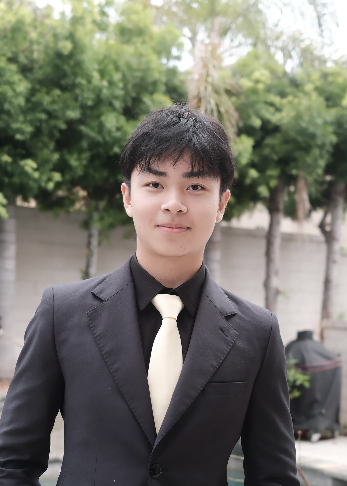

About the Project
Starfield is for anyone who has heard that time slows down near the speed of light and wished they could watch it happen. It turns the equations of special relativity into the view from the window of a starship — one you steer yourself.
Project Overview
Starfield is an interactive visualizer and simulator for exploring the effects of special relativity built around real Lorentz mathematics, relativistic aberration, and Doppler shifting.
To use the simulator, pick a cruising speed and choose where you are headed. A logarithmic velocity slider and presets let you travel from a leisurely 0.1c to the extreme 0.99999c, where the strangest effects live. Destinations range from Proxima Centauri, 4.2 light-years away, to Sagittarius A* and the Andromeda Galaxy 2.5 million light-years out. Live readouts compare the journey two ways: the time it takes on an Earth clock against the far shorter time you experience aboard the ship, and Earth's measured distance against the length-contracted one rushing past your window. The Lorentz factor γ ties them together — at high speeds, a trip that takes centuries from Earth passes in a handful of years for the traveler.
About Me

Hi my name is Quang Anh Nguyen, the creator of Starfield and a high school student based in Southern California. I have been a physics enthusiast since a young age, and my passion for understanding the universe and desire to share that knowledge with others has led me to create Starfield.
I hope that Starfield will inspire others to explore the wonders of physics and appreciate the beauty of our universe.
Mission
Everybody has heard of Albert Eistein and Special Relativity, but few understand its strange and fascinating predictions. The goal of Starfield is to make these predictions tangible and accessible to everyone regardless of their background in physics. You will be able to experience the effects of travelling at relativistic speeds in a way that is both educational and engaging by experiencing the cosmos through the viewpoint of an interstellar spaceship moving at relativistic speeds.
Roadmap
-
Milestone 01
First prototype of the special relativity simulator engine.
-
Milestone 02
First prototype of starfield, relativistic aberration, and Doppler shifting visualizer.
-
Milestone 03
Public launch as an educational site to the web.
-
Next
Smoother visual effects, improved user interface, and a physics background page.